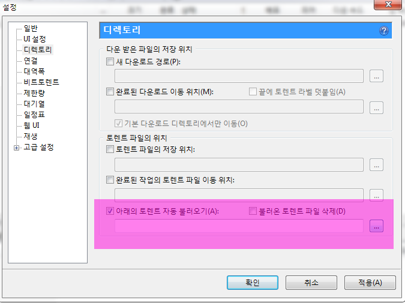

요새 해외 IT사이트에서는 Dropbox의 인기가 상당히 높은 듯하다. Lifehacker에도 심심찮게 Dropbox 관련 팁들이 나오더니 얼마전 Dropbox사 측에서 직접 개최했던
Dropbox hack week!이라는 워크샵에서는 정말로 기발한 다양한 아이디어의 Dropbox 팁들이 공개되었다. 나역시 얼마전부터는 Dropbox를 상당히 요긴하게 쓰고 있는데,
이를테면 나의 경우 아예 컴퓨터 바탕화면 자체를 Dropbox 루트 디렉토리로 설정해버렸다. 그리고 생각나는 아이디어나 간단한메모등을 모두 바탕화면에 넣어버리고 틈나는 대로 정리하는 습관 즉, GTD(Getting Things Done)를Dropbox와 PC의 바탕화면을 이용해서 시도해봤더니 별도로 싱크에 대한 고려없이도 PC로 일하는 일상의 작은 단상들과Todo list들이 정리되는 기쁨을 맛보고 있다. 더구나 요새 스마트폰에서는 Dropbox를 완벽하게 지원하기 때문에 언제어디서나 나의 일상과 고민을 바탕화면과 Dropbox를 통해 접근할 수 있는 장점이 있다.
토런트를 통해서 파일 공유를 자주 하는 사람이라면 Dropbox는 제대로 유용할 수 있다. 만약 집 컴퓨터가 토런트를 이용한다운로드하는 클라이언트이고 항시 켜져있다면 Dropbox를 활용해서 언제 어디서나 원하는 파일을 다운로드받을 수 있다.
원리는 상당히 간단하다. uTorrent 클라이언트를 예로 들면 uTorrent의 설정에 보면 다음과 같은 항목을 설정해주면 된다.

즉 uTorrent가 항상 해당 디렉토리에서 토렌트 파일을 자동으로 읽어서 다운로드하게 만든다. 즉, 이 디렉토리를Dropbox의 특정 디렉토리로 설정하는 것이다! 이렇게 해놓으면 외부에서 Dropbox에 접근하여 원하는 토렌트파일만 넣어주면집 PC가 알아서 다운로드를 하는 것이다.
그 외에도 Dropbox를 활용한 팁들은 찾아보면 정말 엄청나게 다양하고 앞으로 그 팁은 더더욱이나 많아질 듯하다. 틈나는 대로 여기 블로그에 소개하도록 하고 오늘은 여기까지.


최근 덧글